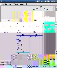
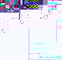

| Natural Language Toolkit | |||||
|---|---|---|---|---|---|
| Home | Installation | Documentation | Teaching | Contributing |
|
OverviewNLTK, the Natural Language Toolkit, is a suite of Python libraries and programs for symbolic and statistical natural language processing. NLTK includes graphical demonstrations and sample data. It is accompanied by extensive documentation, including tutorials that explain the underlying concepts behind the language processing tasks supported by the toolkit. NLTK is ideally suited to students who are learning NLP (natural language processing) or conducting research in NLP or closely related areas, including empirical linguistics, cognitive science, artificial intelligence, information retrieval, and machine learning. NLTK has been used successfully as a teaching tool, as an individual study tool, and as a platform for prototyping and building research systems. NLTK is free software, released under an open source license. Join the NLTK-Announce mailing list and receive announcements about new releases. Join the NLTK-Devel mailing list if you're interested in following or contributing to new developments in the toolkit. Latest NLTK Release: 1.4The latest release of NLTK (version 1.4.4) can be downloaded from the SourceForge download page. See the installation instructions for more information. Latest NLTK-Lite Release: 0.5The latest release of NLTK-Lite (version 0.5) can be downloaded from the SourceForge download page. Other Free NLP Software
|
News NLTK-Lite 0.5 released [September 2005] NLTK-Lite 0.4 released [September 2005] NLTK-Lite 0.3 released [August 2005] NLTK-Lite 0.2 released [July 2005] NLTK 1.4.4 Release [July 2005] NLTK-Lite 0.1 released [July 2005] NLTK-Contrib 1.4.4 Release [July 2005] Brazilian Portuguese Translation [April 2005] NLTK-Lite 0.1 beta released [June 2005] NLTK-Contrib 1.4.3 Release [April 2005] Brazilian Portuguese Translation [April 2005] NLTK 1.4.3 Release [February 2005] Brill Tagger Added [June 2004] |
|
 Chart Parser |
Bottom-Up Parser |
 Top-Down Parser |
Plotting Tool |
| Last modified: Tue Sep 27 11:21:31 EST 2005 | Edward D. Loper, Steven Bird |

{kind=link}
{kind=link}
{kind=link}
{kind=link}